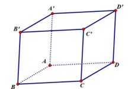
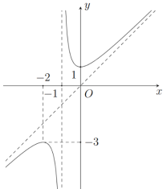
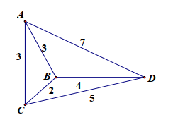
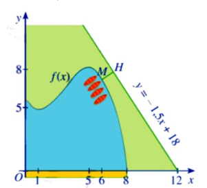

ĐỀ THI TOÁN - ĐỀ SỐ 3 HOT
Phần I: Trắc Nghiệm Nhiều Lựa Chọn
Tóm tắt kiến thức: Nguyên hàm
Nguyên hàm của \( x^n \): \(\int x^n \, dx = \frac{1}{n+1} x^{n+1} + C\), với \( n \neq -1 \). Áp dụng công thức này để tính nguyên hàm của \( x^{\frac{1}{3}} \).
Câu 1:
Khẳng định nào dưới đây đúng?
Chọn đáp án:
Lời giải:
Ta có: \(\int x^{\frac{1}{3}} \, dx = \frac{1}{\frac{1}{3} + 1} x^{\frac{1}{3} + 1} + C = \frac{3}{4} x^{\frac{4}{3}} + C\), với \( C \in \mathbb{R}\).
So sánh với các lựa chọn, chỉ có A đúng: \(\int x^{\frac{1}{3}} \, dx = x^{\frac{4}{3}} + C\).
Đáp án: A.
Tóm tắt kiến thức: Cực trị của hàm số
Giá trị cực tiểu của hàm số được xác định từ bảng biến thiên, tại điểm mà \( f'(x) = 0 \) và hàm số đạt giá trị nhỏ nhất trên tập xác định.
Câu 2:
Cho hàm số \( y = f(x) \) có bảng biến thiên như sau:

Giá trị cực tiểu của hàm số đã cho bằng:
Chọn đáp án:
Lời giải:
Từ bảng biến thiên, giá trị cực tiểu của hàm số là \(-4\).
Đáp án: D.
Tóm tắt kiến thức: Tiệm cận xiên
Hàm số \( y = f(x) \) có tiệm cận xiên \( y = mx + n \) nếu \(\lim_{x \to \pm\infty} [f(x) - (mx + n)] = 0\). Tính \( m = \lim_{x \to \infty} \frac{f(x)}{x} \), \( n = \lim_{x \to \infty} [f(x) - mx]\).
Câu 3:
Hàm số \( f(x) = 2x - 1 + \frac{1}{x-2} \) có tiệm cận xiên là:
Chọn đáp án:
Lời giải:
Ta có: \(\lim_{x \to \pm\infty} [f(x) - (2x - 1)] = \lim_{x \to \pm\infty} \frac{1}{x-2} = 0 \Rightarrow y = 2x - 1\) là tiệm cận xiên.
Đáp án: A.
Tóm tắt kiến thức: Vector chỉ phương
Đường thẳng tham số \(\left\{\begin{array}{l}x = x_0 + at \\ y = y_0 + bt \\ z = z_0 + ct\end{array}\right.\) có vector chỉ phương là \(\vec{u} = (a; b; c)\).
Câu 4:
Cho đường thẳng \(\Delta\) có phương trình \(\left\{\begin{array}{l}x = 3 - t \\ y = -1 \\ z = 3t\end{array}\right.\) (\( t \in \mathbb{R} \)). Vector nào sau đây là vector chỉ phương của \(\Delta\)?
Chọn đáp án:
Lời giải:
Phương trình: \(\left\{\begin{array}{l}x = 3 - t \\ y = -1 \\ z = 3t\end{array}\right.\). Vector chỉ phương là \(\vec{u}_4 = (-1; 0; 3)\).
Đáp án: D.
Tóm tắt kiến thức: Quan hệ vector trong hình hộp
Trong hình hộp, các vector cạnh và đường chéo thỏa mãn các đẳng thức vector. Kiểm tra bằng cách biểu diễn vector kết quả qua các vector thành phần.
Câu 5:
Cho hình hộp \(ABCD.A'B'C'D'\) (hình vẽ: ). Đẳng thức nào sau đây sai?
Chọn đáp án:
Lời giải:
Ta có: \(\overrightarrow{AB'} + \overrightarrow{CB} = \overrightarrow{AB'} + \overrightarrow{DA} = \overrightarrow{AB'} - \overrightarrow{AD} = \overrightarrow{DB'} \neq \overrightarrow{AC'}\). Các đẳng thức khác đúng.
Đáp án: D.
Tóm tắt kiến thức: Cấp số cộng
Cấp số cộng có công thức: \( u_n = u_1 + (n-1)d \). Từ \( u_n \) và công sai \( d \), ta tính được \( u_1 \).
Câu 6:
Cho cấp số cộng \((u_n)\) với \( u_{10} = 25 \) và công sai \( d = 3 \). Khi đó \( u_1 \) bằng:
Chọn đáp án:
Lời giải:
Ta có: \( u_{10} = u_1 + 9d \Rightarrow u_1 = u_{10} - 9d = 25 - 9 \cdot 3 = -2 \).
Đáp án: D.
Tóm tắt kiến thức: Phương trình lũy thừa
Phương trình \( a^{bx} = c \) có nghiệm \( x = \frac{\log_a c}{b} \). Sử dụng lôgarit để giải.
Câu 7:
Nghiệm của phương trình \( 3^{2x} = 5 \) là:
Chọn đáp án:
Lời giải:
Ta có: \( 3^{2x} = 5 \Leftrightarrow 2x = \log_3 5 \Leftrightarrow x = \frac{\log_3 5}{2} \).
Đáp án: A.
Tóm tắt kiến thức: Mặt cầu
Phương trình mặt cầu: \( x^2 + y^2 + z^2 + 2ax + 2by + 2cz + d = 0 \) có tâm \( I(-a; -b; -c) \) và bán kính \( R = \sqrt{a^2 + b^2 + c^2 - d} \).
Câu 8:
Trong không gian \( Oxyz \), cho mặt cầu \((S): x^2 + y^2 + z^2 - 6x + 4y - 8z + 4 = 0\). Tọa độ tâm \( I \) và bán kính \( R \) của mặt cầu \((S)\) là:
Chọn đáp án:
Lời giải:
Phương trình mặt cầu: \( x^2 + y^2 + z^2 - 6x + 4y - 8z + 4 = 0 \).
Tâm: \( I(3; -2; 4) \).
Bán kính: \( R = \sqrt{3^2 + (-2)^2 + 4^2 - 4} = \sqrt{9 + 4 + 16 - 4} = \sqrt{25} = 5 \).
Đáp án: B.
Tóm tắt kiến thức: Thể tích khối tròn xoay
Thể tích khối tròn xoay quanh trục hoành: \( V = \pi \int_a^b [f(x)]^2 \, dx \), với \( f(x) \) là hàm xác định vùng quay.
Câu 9:
Cho hình phẳng \((H)\) giới hạn bởi các đường \( y = 2x - x^2 \), \( y = 0 \). Quay \((H)\) quanh trục hoành tạo thành khối tròn xoay có thể tích là:
Chọn đáp án:
Lời giải:
Thể tích: \( V = \pi \int_0^2 (2x - x^2)^2 \, dx \).
Đáp án: B.
Tóm tắt kiến thức: Bất phương trình lôgarit
Giải bất phương trình \(\log_b f(x) > \log_b g(x)\): Nếu \( 0 < b < 1 \), thì \( f(x) < g(x) \); nếu \( b > 1 \), thì \( f(x) > g(x) \). Kiểm tra điều kiện xác định.
Câu 10:
Tập nghiệm của bất phương trình \(\log_{\frac{1}{6}} (x - 2) > \log_{\frac{1}{6}} (7 - 2x)\) là:
Chọn đáp án:
Lời giải:
Vì \(\frac{1}{6} < 1\), ta có: \(\log_{\frac{1}{6}} (x - 2) > \log_{\frac{1}{6}} (7 - 2x) \Leftrightarrow x - 2 < 7 - 2x\), và điều kiện \( x - 2 > 0 \), \( 7 - 2x > 0 \).
Giải: \(\left\{\begin{array}{l}x - 2 > 0 \\ x - 2 < 7 - 2x \\ 7 - 2x > 0\end{array}\right. \Leftrightarrow \left\{\begin{array}{l}x > 2 \\ 3x < 9 \\ x < \frac{7}{2}\end{array}\right. \Leftrightarrow 2 < x < 3\).
Đáp án: B.
Tóm tắt kiến thức: Hình học không gian
Trong hình hộp, các mặt phẳng song song thỏa mãn nếu chúng không có điểm chung hoặc không cắt nhau. Kiểm tra bằng cách xác định điểm chung.
Câu 11:
Cho hình hộp \(ABCD.A'B'C'D'\). Mệnh đề nào dưới đây là sai?
Chọn đáp án:
Lời giải:
Hai mặt phẳng \((ABA')\) và \((B'D'C)\) có điểm chung \( B' \), nên không song song. Các mệnh đề khác đúng.
Đáp án: B.
Tóm tắt kiến thức: Đồ thị hàm số
Xác định hàm số dựa trên đặc điểm đồ thị (tiệm cận, điểm đặc biệt). Kiểm tra bằng cách thay điểm thuộc đồ thị hoặc phân tích tiệm cận.
Câu 12:
Đồ thị trong hình sau là đồ thị của hàm số nào?

Chọn đáp án:
Lời giải:
Đồ thị có tiệm cận xiên, loại \( y = \frac{1}{x+1} \) (tiệm cận đứng) và \( y = \frac{2x+1}{x+1} \) (tiệm cận ngang).
Đồ thị đi qua điểm \((-2; -3)\): Thay vào \( y = \frac{x^2 + x + 1}{x+1} \), ta có \( y(-2) = \frac{4 - 2 + 1}{-1} = -3 \), thỏa mãn. Với \( y = \frac{x^2 - x + 1}{x+1} \), \( y(-2) \neq -3 \).
Đáp án: D.
Phần II: Trắc Nghiệm Đúng/Sai
Tóm tắt kiến thức: Hàm số lôgarit và lũy thừa
Xét tính đơn điệu: \( f'(x) \). Cực trị: \( f'(x) = 0 \). Giá trị lớn nhất/nhỏ nhất trên đoạn: So sánh tại điểm đầu, cuối và cực trị.
Câu 13:
Cho hàm số \( f(x) = \ln x - 2x^2 \), \( \forall x \in (0; +\infty) \). Xét các phát biểu sau:
Chọn đáp án cho từng phát biểu:
a)
b)
c)
d)
Lời giải:
a) Sai. \( f'(x) = \frac{1}{x} - 4x \geq 0 \Leftrightarrow x \in \left(0; \frac{1}{2}\right] \), hàm chỉ đồng biến trên \(\left(0; \frac{1}{2}\right]\).
b) Đúng. \( f(1) = \ln 1 - 2 \cdot 1^2 = -2 \); \( f(e^2) = \ln e^2 - 2 \cdot (e^2)^2 = 2 - 2e^4 \).
c) Sai. \( f'(x) = 0 \Leftrightarrow x = \frac{1}{2} \), chỉ có một điểm cực trị.
d) Sai. Giá trị tại: \( f(1) = -2 \), \( f(e^2) = 2 - 2e^4 \), \( f\left(\frac{1}{2}\right) = -\ln 2 - \frac{1}{2} \). Min: \( 2 - 2e^4 \), max: \( -\ln 2 - \frac{1}{2} \). Tổng: \( \frac{3}{2} - \ln 2 - 2e^4 \neq -\frac{5}{2} - \ln 2 \).
Đáp án: a) Sai, b) Đúng, c) Sai, d) Sai.
Tóm tắt kiến thức: Vận tốc và quãng đường
Vận tốc \( v(t) = at + b \), quãng đường \( S(t) = \int_0^t v(t) \, dt \). Giải hệ phương trình từ điều kiện thời gian và quãng đường.
Câu 14:
Một người điều khiển ô tô chuyển trên đoạn đường dẫn để nhập làn cao tốc. Khi ô tô có vận tốc \( v(t) = at + b \) (\( a > 0 \)), trong đó \( t \) là thời gian (giây) kể từ khi bắt đầu tăng tốc. Biết ô tô nhập làn sau 15 giây và duy trì tăng tốc trong 20 giây kể từ khi bắt đầu. Xét các phát biểu sau:
Chọn đáp án cho từng phát biểu:
a)
b)
c)
d)
Lời giải:
a) Sai. Quãng đường: \( S(15) = \int_0^{15} (at + \frac{100}{9}) \, dt = \frac{2500}{9} \approx 277.78 \, \text{m} \neq 200 \, \text{m} \).
b) Đúng. Tại \( t = 0 \), \( v(0) = \frac{100}{9} \Rightarrow b = \frac{100}{9} \).
c) Sai. Công thức đúng là \( S(t) = \int_0^t v(t) \, dt \), không phải \(\int_0^{20}\).
d) Sai. \( v(t) = \frac{80}{81}t + \frac{100}{9} \), tại \( t = 20 \), \( v(20) = \frac{2500}{81} \approx 30.86 \, \text{m/s} \approx 111 \, \text{km/h} > 100 \, \text{km/h} \).
Đáp án: a) Sai, b) Đúng, c) Sai, d) Sai.
Tóm tắt kiến thức: Xác suất có điều kiện
Xác suất có điều kiện: \( P(A|B) = \frac{P(A \cap B)}{P(B)} \). Sử dụng công thức Bayes và tính độc lập để giải.
Câu 15:
Có hai phác đồ điều trị A và B cho một loại bệnh. Phác đồ A có xác suất chữa khỏi bệnh là 60% và xác suất gây tác dụng phụ nghiêm trọng là 5%. Phác đồ B có xác suất chữa khỏi bệnh là 70% và xác suất gây tác dụng phụ nghiêm trọng là 10%. Một bệnh nhân được điều trị ngẫu nhiên bằng một trong hai phác đồ (xác suất chọn mỗi phác đồ là 50%). Xét các phát biểu sau:
Chọn đáp án cho từng phát biểu:
a)
b)
c)
d)
Lời giải:
Gọi \( A \): chọn phác đồ A; \( B \): chữa khỏi bệnh; \( C \): tác dụng phụ nghiêm trọng.
\( P(A) = P(\bar{A}) = 0.5 \), \( P(B|A) = 0.6 \), \( P(B|\bar{A}) = 0.7 \), \( P(C|A) = 0.05 \), \( P(C|\bar{A}) = 0.1 \).
a) Sai. \( P(A \cap B) = P(A) \cdot P(B|A) = 0.5 \cdot 0.6 = 0.3 \neq 0.6 \).
b) Đúng. \( P(C) = P(A) \cdot P(C|A) + P(\bar{A}) \cdot P(C|\bar{A}) = 0.5 \cdot 0.05 + 0.5 \cdot 0.1 = 0.075 \).
c) Đúng. \( P(\bar{A}|C) = \frac{P(\bar{A} \cap C)}{P(C)} = \frac{0.5 \cdot 0.1}{0.075} = \frac{2}{3} \approx 0.6667 > 0.65 \).
d) Đúng. \( P(B \cap \bar{C}) = P(A) \cdot P(B|A) \cdot P(\bar{C}|A) + P(\bar{A}) \cdot P(B|\bar{A}) \cdot P(\bar{C}|\bar{A}) = 0.5 \cdot 0.6 \cdot 0.95 + 0.5 \cdot 0.7 \cdot 0.9 = 0.6 \).
Đáp án: a) Sai, b) Đúng, c) Đúng, d) Đúng.
Tóm tắt kiến thức: Hình học không gian
Độ dài đoạn thẳng: \( AB = \sqrt{(x_2 - x_1)^2 + (y_2 - y_1)^2 + (z_2 - z_1)^2} \). Khoảng cách từ điểm đến đường thẳng: \( d = \frac{|\overrightarrow{AC} \times \overrightarrow{AB}|}{|\overrightarrow{AB}|} \). Diện tích tam giác: \( S = \frac{1}{2} \cdot AB \cdot d(M, AB) \).
Câu 16:
Trong không gian \( Oxyz \), cho các điểm \( A(1; 1; 0) \), \( B(5; -3; 2) \), \( C(0; 4; -1) \). Xét các điểm \( M \) thay đổi trong không gian sao cho diện tích tam giác \( ABM \) bằng \( 6\sqrt{2} \).

Xét các phát biểu sau:
Chọn đáp án cho từng phát biểu:
a)
b)
c)
d)
Lời giải:
a) Sai. \(\overrightarrow{AB} = (4; -4; 2)\), \( AB = \sqrt{16 + 16 + 4} = 6 \neq 3 \).
b) Đúng. \(\overrightarrow{AB} = (4; -4; 2) = 2(2; -2; 1)\), phương trình: \(\frac{x-1}{2} = \frac{y-1}{-2} = \frac{z}{1}\).
c) Sai. \(\overrightarrow{AC} = (-1; 3; -1)\), \( d(C, AB) = \frac{|\overrightarrow{AC} \times \overrightarrow{AB}|}{|\overrightarrow{AB}|} = \sqrt{2} \neq 2\sqrt{2} \).
d) Đúng. \( S_{ABM} = \frac{1}{2} \cdot 6 \cdot d(M, AB) = 6\sqrt{2} \Rightarrow d(M, AB) = 2\sqrt{2} \). \( MC_{\min} = |d(M, AB) - d(C, AB)| = |2\sqrt{2} - \sqrt{2}| = \sqrt{2} \).
Đáp án: a) Sai, b) Đúng, c) Sai, d) Đúng.
Phần III: Trắc Nghiệm Trả Lời Ngắn
Tóm tắt kiến thức: Khoảng cách trong hình chóp
Khoảng cách từ điểm đến mặt phẳng được tính bằng cách sử dụng hình chiếu vuông góc và công thức khoảng cách. Trong hình chóp, xác định đường vuông góc chung.
Câu 17:
Cho hình chóp \( S.ABCD \) có đáy \( ABCD \) là hình chữ nhật với \( AB = 2\sqrt{2} \), \( BC = 2 \). Cạnh bên \( SA \) vuông góc với đáy và góc giữa cạnh bên \( SC \) với đáy là \( 60^\circ \). Tính khoảng cách từ điểm \( C \) đến mặt phẳng \((SBD)\). (Kết quả làm tròn đến hàng phần trăm).
Nhập đáp án:
Lời giải:
Gọi \( H \) là hình chiếu của \( A \) trên \( BD \), \( K \) là hình chiếu của \( A \) trên \( SH \). Ta có \( SA \perp BD \), \( AH \perp BD \), nên \( BD \perp (SAH) \). Suy ra \( AK \perp BD \). Vì \( AK \perp SH \), nên \( AK \perp (SBD) \).
Khoảng cách: \( d(C; (SBD)) = d(A; (SBD)) = AK \).
Tính: \(\frac{1}{AK^2} = \frac{1}{SA^2} + \frac{1}{AH^2} = \frac{1}{SA^2} + \frac{1}{AB^2} + \frac{1}{AD^2} = \frac{29}{72}\).
Suy ra: \( AK = \frac{6\sqrt{58}}{29} \approx 1.58 \).
Đáp án: 1.58.
Tóm tắt kiến thức: Bài toán tối ưu đường đi
Bài toán tìm đường đi ngắn nhất qua các điểm (bài toán người bán hàng) được giải bằng cách liệt kê các hành trình và tính tổng quãng đường.
Câu 18:
Công ty giao hàng nhanh có 4 kho hàng \( A, B, C, D \). Quản lý muốn lên kế hoạch cho xe giao hàng đi qua tất cả các kho để lấy hàng và quay lại kho ban đầu, với điều kiện mỗi kho chỉ đi qua một lần. Khoảng cách giữa các kho (km) được mô tả trong hình bên:

Quãng đường ngắn nhất để xe giao hàng hoàn thành việc lấy hàng và quay về là bao nhiêu?
Nhập đáp án:
Lời giải:
Xe xuất phát từ \( A \), các hành trình:
- \( A \to B \to C \to D \to A \): \( 3 + 2 + 5 + 7 = 17 \).
- \( A \to B \to D \to C \to A \): \( 3 + 4 + 5 + 3 = 15 \).
- \( A \to C \to B \to D \to A \): \( 3 + 2 + 4 + 7 = 16 \).
- \( A \to C \to D \to B \to A \): \( 3 + 5 + 4 + 3 = 15 \).
- \( A \to D \to B \to C \to A \): \( 7 + 4 + 2 + 3 = 16 \).
- \( A \to D \to C \to B \to A \): \( 7 + 5 + 2 + 3 = 17 \).
Quãng đường ngắn nhất là 15 km.
Đáp án: 15.
Tóm tắt kiến thức: Chuyển động thẳng đều
Trong chuyển động thẳng đều, vector vận tốc không đổi, quãng đường tỷ lệ với thời gian. Tọa độ điểm được tính dựa trên tỷ lệ thời gian.
Câu 19:
Trong không gian, máy bay di chuyển với vận tốc và hướng không đổi từ điểm \( M(500; 200; 8) \) đến điểm \( N(800; 300; 10) \) trong 20 phút. Nếu máy bay giữ nguyên vận tốc và hướng bay, thì tọa độ của máy bay sau 5 phút tiếp theo là \( (a; b; c) \). Tính giá trị biểu thức \( S = a - b - 2c \).

Nhập đáp án:
Lời giải:
\(\overrightarrow{MN} = (300; 100; 2)\). Gọi \( Q(a; b; c) \) là tọa độ sau 5 phút.
Vì thời gian \( MN \) (20 phút) gấp 4 lần \( NQ \) (5 phút), nên \(\overrightarrow{MN} = 4 \overrightarrow{NQ}\).
\(\left\{\begin{array}{l}300 = 4(a - 800) \\ 100 = 4(b - 300) \\ 2 = 4(c - 10)\end{array}\right. \Leftrightarrow \left\{\begin{array}{l}a = 875 \\ b = 325 \\ c = 10.5\end{array}\right.\).
\( S = a - b - 2c = 875 - 325 - 2 \cdot 10.5 = 529 \).
Đáp án: 529.
Tóm tắt kiến thức: Cân bằng lực
Trong bài toán cân bằng lực, tổng các lực bằng lực tổng. Sử dụng phương trình cân bằng và điều kiện độ lớn lực để tính tọa độ.
Câu 20:
Một chiếc điện thoại iPhone được đặt trên giá đỡ có ba chân với điểm tựa \( S(0; 0; 30) \) và các điểm chạm mặt phẳng lần lượt là \( A(0; -6; 0) \), \( B(3\sqrt{3}; 3; 0) \), \( C(-3\sqrt{3}; 3; 0) \) (đơn vị: cm). Điện thoại có trọng lượng 2 N, và ba lực tác dụng lên giá đỡ (\(\vec{F}_1, \vec{F}_2, \vec{F}_3\)) có độ lớn bằng nhau. Biết tọa độ của lực \(\vec{F}_1 = (a; b; c)\), tính \( P = 3a + 5b + 8c \).

Nhập đáp án:
Lời giải:
\(\overrightarrow{SA} = (0; -6; -30)\), \(\overrightarrow{SB} = (3\sqrt{3}; 3; -30)\), \(\overrightarrow{SC} = (-3\sqrt{3}; 3; -30)\). Các lực: \(\vec{F}_1 = k \cdot \overrightarrow{SA}\), \(\vec{F}_2 = k \cdot \overrightarrow{SB}\), \(\vec{F}_3 = k \cdot \overrightarrow{SC}\).
Tổng lực: \(\vec{F}_1 + \vec{F}_2 + \vec{F}_3 = (0; 0; -90k) = \vec{F} = (0; 0; -2) \Rightarrow k = \frac{1}{45}\).
\(\vec{F}_1 = \left(0; -\frac{2}{15}; -\frac{2}{3}\right) \Rightarrow a = 0, b = -\frac{2}{15}, c = -\frac{2}{3}\).
\( P = 3a + 5b + 8c = 0 + 5 \cdot \left(-\frac{2}{15}\right) + 8 \cdot \left(-\frac{2}{3}\right) = -\frac{10}{15} - \frac{16}{3} = -6 \).
Đáp án: -6.
Tóm tắt kiến thức: Công thức Bayes
Công thức Bayes: \( P(A|B) = \frac{P(A) \cdot P(B|A)}{P(A) \cdot P(B|A) + P(\bar{A}) \cdot P(B|\bar{A})} \). Áp dụng để tính xác suất có điều kiện.
Câu 21:
Trong kỳ thi tốt nghiệp THPT, tỉnh X có 80% học sinh chọn tổ hợp A00 (Toán, Vật lý, Hóa học). Nếu học sinh chọn A00, xác suất đỗ đại học là 0.6; nếu không chọn A00, xác suất đỗ đại học là 0.7. Chọn ngẫu nhiên một học sinh đã tốt nghiệp. Biết học sinh này đỗ đại học, tính xác suất học sinh đã chọn tổ hợp A00. (Kết quả làm tròn đến chữ số thập phân thứ 2).
Nhập đáp án:
Lời giải:
Gọi \( A \): chọn A00; \( B \): đỗ đại học.
\( P(A) = 0.8 \), \( P(\bar{A}) = 0.2 \), \( P(B|A) = 0.6 \), \( P(B|\bar{A}) = 0.7 \).
Theo Bayes: \( P(A|B) = \frac{P(A) \cdot P(B|A)}{P(A) \cdot P(B|A) + P(\bar{A}) \cdot P(B|\bar{A})} = \frac{0.8 \cdot 0.6}{0.8 \cdot 0.6 + 0.2 \cdot 0.7} \approx 0.77 \).
Đáp án: 0.77.
Tóm tắt kiến thức: Tối ưu khoảng cách
Khoảng cách từ điểm \( M(x; f(x)) \) đến đường thẳng \( ax + by + c = 0 \): \( d = \frac{|ax + by + c|}{\sqrt{a^2 + b^2}} \). Tìm cực tiểu bằng đạo hàm.
Câu 22:
Một hồ nước nhân tạo được giới hạn bởi các trục tọa độ và đồ thị hàm số \( y = f(x) = \frac{1}{10}(-x^3 + 9x^2 - 15x + 56) \) (đơn vị: 100 m). Trong công viên có con đường chạy dọc theo đồ thị hàm số \( y = -1.5x + 18 \). Người ta dự định xây bến thuyền tại điểm \( M(a; b) \) sao cho khoảng cách từ bến đến con đường là ngắn nhất. Tính \( a + b \).
Nhập đáp án:
Lời giải:
Điểm \( M(x; f(x)) \), \( f(x) = \frac{1}{10}(-x^3 + 9x^2 - 15x + 56) \), \( 0 \leq x \leq 8 \).
Đường thẳng: \( y = -1.5x + 18 \Leftrightarrow -1.5x - y + 18 = 0 \).
Khoảng cách: \( MH = \frac{|-1.5x - f(x) + 18|}{\sqrt{(-1.5)^2 + 1}} = \frac{|x^3 - 9x^2 + 124|}{10\sqrt{3.25}} \).
Xét \( h(x) = x^3 - 9x^2 + 124 \), \( h'(x) = 3x^2 - 18x = 0 \Leftrightarrow x = 0, 6 \).
Từ bảng biến thiên, \( \min h(x) = h(6) = 16 \). Tại \( x = 6 \), \( f(6) = \frac{1}{10}(216 - 324 - 90 + 56) = 5.8 \).
Đơn vị 100 m: \( a = 6 \cdot 100 = 600 \), \( b = 5.8 \cdot 100 = 740 \).
\( a + b = 600 + 740 = 1340 \).
Đáp án: 1340.